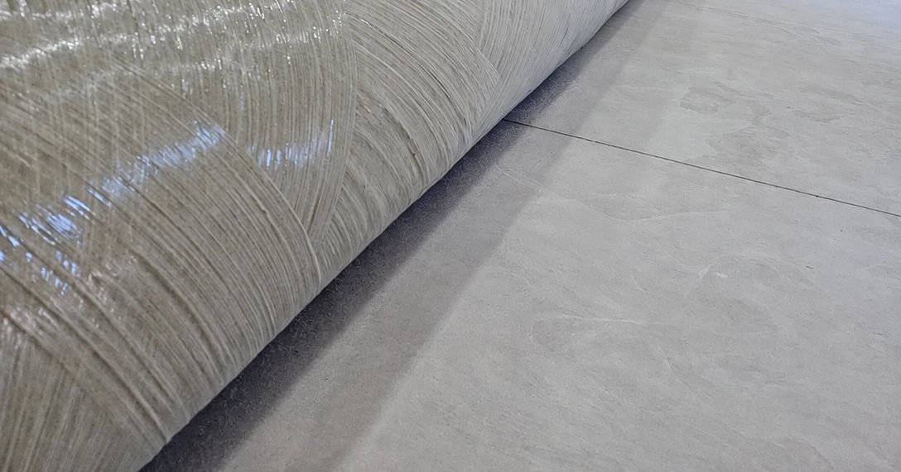

Na hora de especificar postes para uma rede de distribuição, a comparação costuma começar pelo preço unitário. Mas o custo real de um poste aparece ao longo de toda a sua vida: no caminhão que o transporta, no equipamento que o descarrega, na equipe que o instala e nas intervenções de manutenção nos anos seguintes.
Este artigo compara os três materiais mais usados em postes de distribuição (concreto, aço e PRFV, o poliéster reforçado com fibra de vidro) a partir dos critérios que pesam na operação.
Peso, transporte e manuseio
O concreto é o material mais pesado dos três. Isso limita o número de postes por carga e exige caminhão munck para descarga e posicionamento. O aço é mais leve que o concreto, mas também depende de equipamento para o manuseio.
O poste em PRFV é leve. Na prática, isso significa mais postes por carga e a possibilidade de descarga manual ou com equipamento leve, o que faz diferença em áreas rurais, terrenos alagados e locais onde o caminhão não chega.
Corrosão
No concreto, o ponto fraco é a armadura de aço: quando a umidade e os agentes agressivos alcançam o ferro, ele corrói, expande e trinca o concreto ao redor. O poste de aço depende de proteção (galvanização, pintura) que precisa ser mantida.
O PRFV não tem armadura metálica e não enferruja. Por isso é indicado para litoral, áreas industriais e ambientes com umidade constante.
Condutividade elétrica
O aço é condutor. O concreto tem condutividade baixa, mas a armadura interna é metálica. O PRFV é um material isolante, o que contribui para a segurança de equipes de manutenção e de pessoas que circulam perto da rede.
Manutenção
Em ambiente agressivo, o aço exige repintura e inspeções frequentes. O concreto pode precisar de reparos quando a armadura fica exposta. O PRFV dispensa pintura anticorrosiva e reparos de concreto, o que reduz o número de intervenções na rede.
Resumo da comparação
| Critério | PRFV | Concreto | Aço |
|---|---|---|---|
| Peso | Leve | Muito pesado | Pesado |
| Transporte | Mais postes por carga | Limitado pelo peso | Limitado pelo peso |
| Descarga e manuseio | Manual ou equipamento leve | Caminhão munck | Caminhão munck |
| Corrosão | Imune | Corrosão da armadura | Exige proteção |
| Condutividade | Isolante | Baixa | Condutor |
| Manutenção | Baixa | Média | Alta em ambiente agressivo |
Quando o PRFV faz mais sentido
- Redes em locais de acesso difícil, onde o peso do poste define o custo da obra.
- Regiões litorâneas e industriais, com maresia, vapores químicos ou umidade constante.
- Obras com prazo curto, como recomposição de rede, em que transportar e erguer mais postes por viagem acelera o trabalho.
- Aplicações em que o isolamento elétrico da estrutura é um requisito de segurança.
A escolha final depende da carga, do comprimento, do padrão da distribuidora e das condições do local. Os postes Qleve Fiber das linhas PFC e PFQ cobrem de 9 a 11 m e de 150 a 600 daN, conforme a ABNT NBR 16989:2021. Veja as especificações completas na página de produtos.